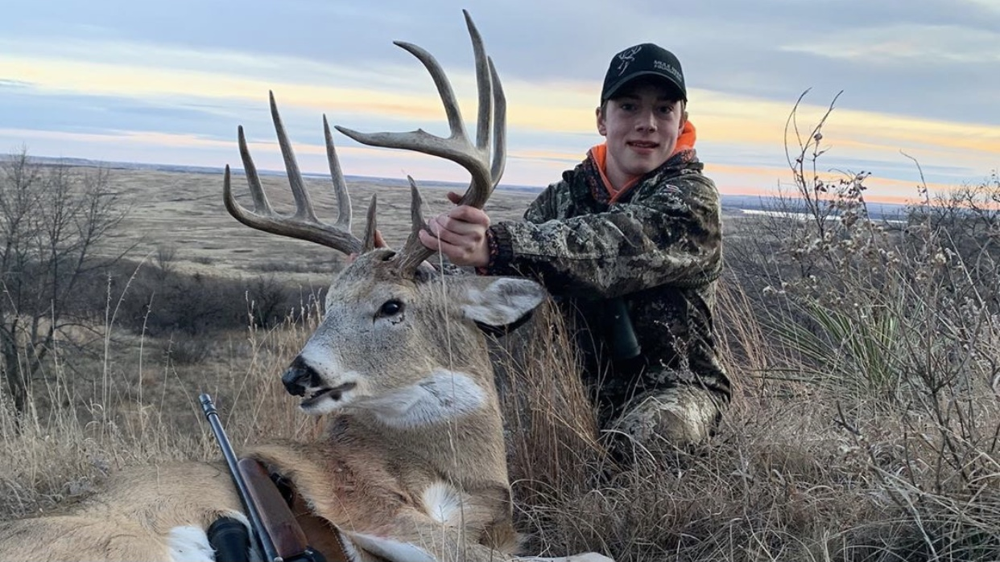
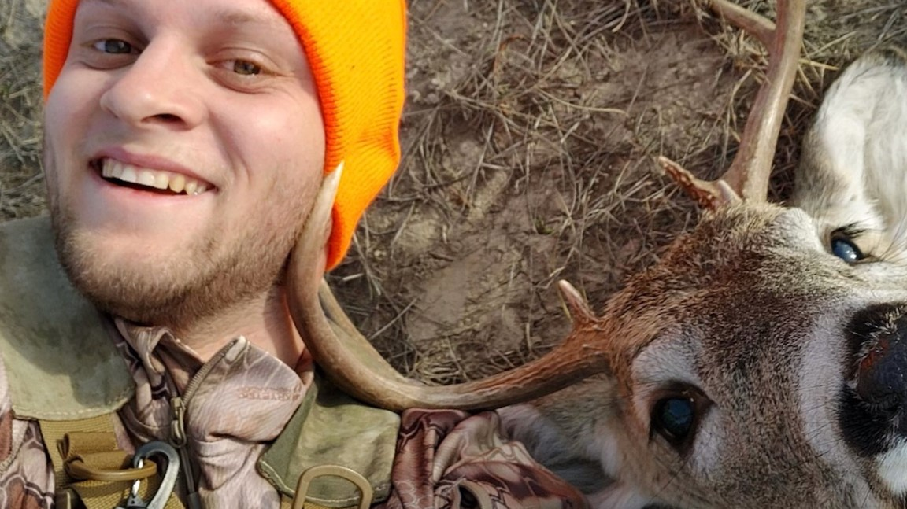
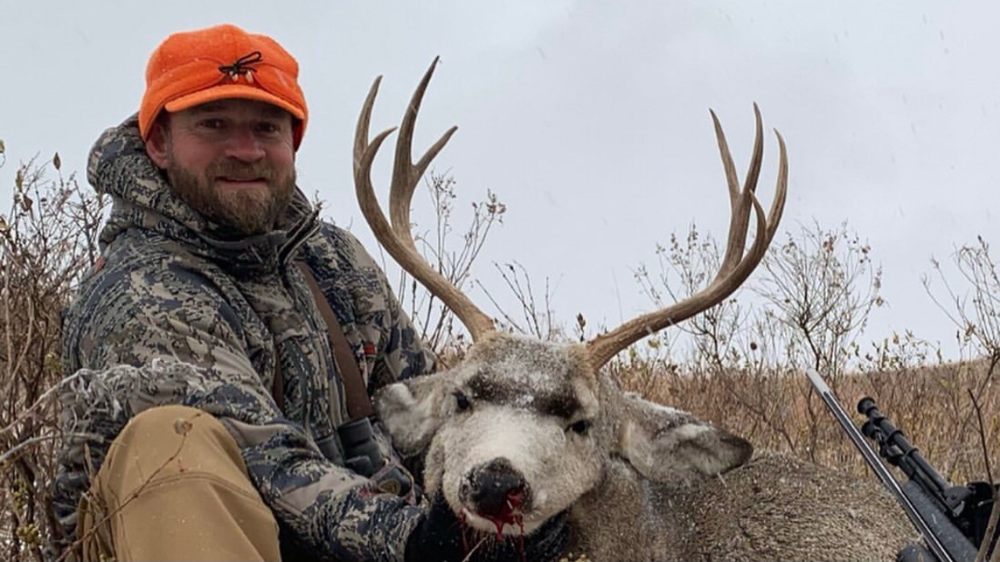
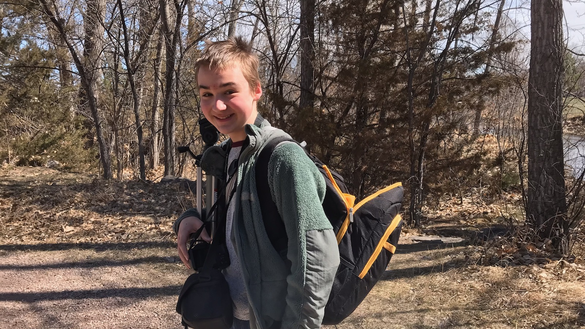
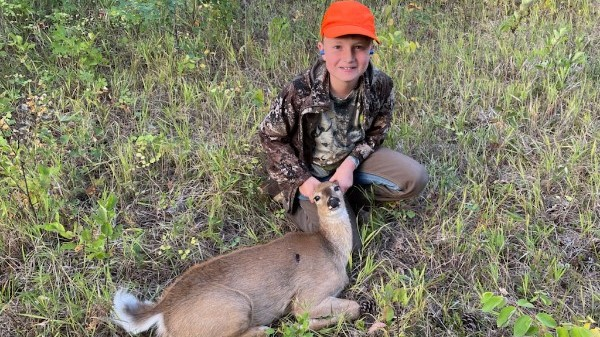

Parker Cotts
Parker has grown up loving the outdoors especially hunting and fishing and this love for the outdoors led to him founding GGT Outdoors. Some of Parker’s favorite things about hunting is spending time with family and friends, enjoying God’s creation, and of course chasing anything from screaming bulls to rutting bucks and even to gobbling turkeys. When Parker isn’t hunting or preparing for hunting season you will probably find him with some sort of fishing pole or getting ready to go camping with some buddies. Parker especially loves sitting by the fire in the evenings listening to stories about the adventures the others have had that day. #GodsGotThis

Nathan Cotts
Nathan has had a love for the outdoors from an early age. Growing on the west bank of the muddy Gila river across from the small town of Kearny AZ on a small Farm/Ranch. At the age of 12 his mom bought him the 1st Quad Runner by Suzuki and he learned the backroads of the desert by Kearny like the back of his hand. At 15 he went on his 1st Big game hunt with his friend Curtis and Eddie Stacy. He and a friend bagged a couple of bucks the first year they went hunting, and that was the start of his lifelong love for Hunting. As an adult he has also come to love fishing as well, but Hunting is what He likes the most. He has refined his hunting skills, from learning how to glass for animals to learning to be patient in a blind he has a passion for hunting. Now one of his favorite things to do is to spend quality time in God's creation enjoying the company of his Family and Friends.
Tim King
Tim is an avid marksman and outdoorsman who carries a deep love and appreciation for all aspects of nature. He loves any opportunity to experience God’s created wonders though hiking, camping, hunting, fishing and wilderness meditation. Tim is a gunsmith who specializes in long range rifles and is dedicated to precision whether he is loading rounds at the bench, building rifles at the lathe, shooting on the range, or hunting in the woods. Tim loves sharing the outdoors with others in various ways, especially teaching the finer aspects of precision shooting or introducing young people to the thrill of the hunt.
#AimSmallMissSmall

Connor Auteberry
Tim is an avid marksman and outdoorsman who carries a deep love and appreciation for all aspects of nature. He loves any opportunity to experience God’s created wonders though hiking, camping, hunting, fishing and wilderness meditation. Tim is a gunsmith who specializes in long range rifles and is dedicated to precision whether he is loading rounds at the bench, building rifles at the lathe, shooting on the range, or hunting in the woods. Tim loves sharing the outdoors with others in various ways, especially teaching the finer aspects of precision shooting or introducing young people to the thrill of the hunt.

Tim Norton
Tim is an avid marksman and outdoorsman who carries a deep love and appreciation for all aspects of nature. He loves any opportunity to experience God’s created wonders though hiking, camping, hunting, fishing and wilderness meditation. Tim is a gunsmith who specializes in long range rifles and is dedicated to precision whether he is loading rounds at the bench, building rifles at the lathe, shooting on the range, or hunting in the woods. Tim loves sharing the outdoors with others in various ways, especially teaching the finer aspects of precision shooting or introducing young people to the thrill of the hunt.

Alexavier Brink
Alexavier has been runnin and gunnin with the crew for a couple months now as a cameraman, editor, and anything in between.

Bodie Cotts
Tim is an avid marksman and outdoorsman who carries a deep love and appreciation for all aspects of nature. He loves any opportunity to experience God’s created wonders though hiking, camping, hunting, fishing and wilderness meditation. Tim is a gunsmith who specializes in long range rifles and is dedicated to precision whether he is loading rounds at the bench, building rifles at the lathe, shooting on the range, or hunting in the woods. Tim loves sharing the outdoors with others in various ways, especially teaching the finer aspects of precision shooting or introducing young people to the thrill of the hunt.